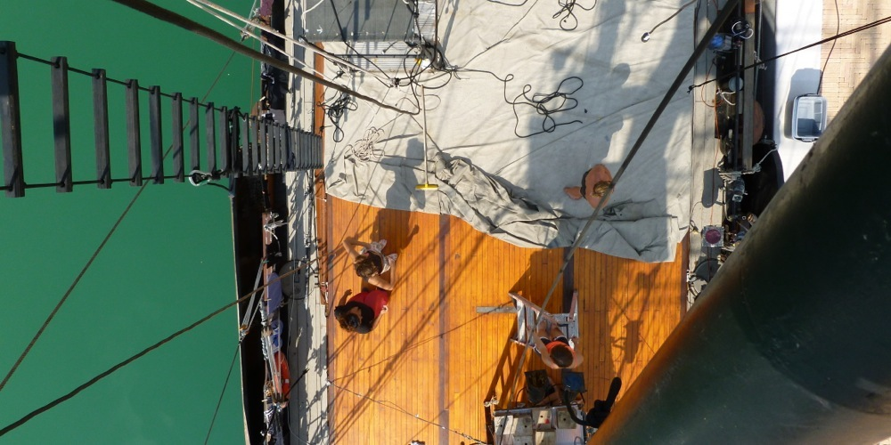
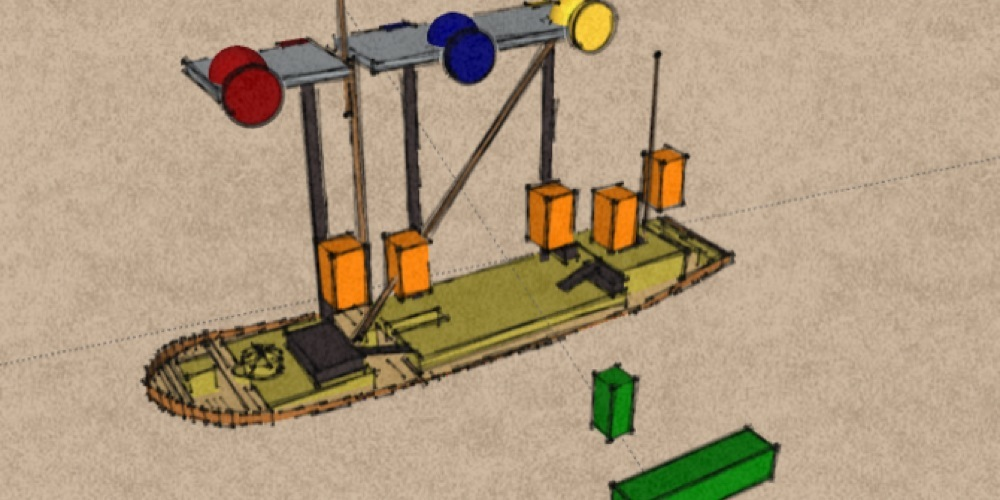
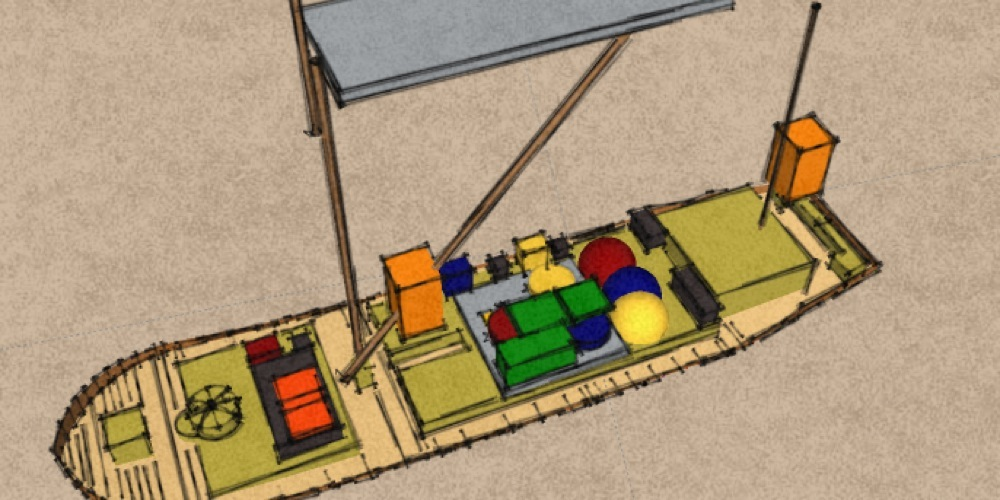
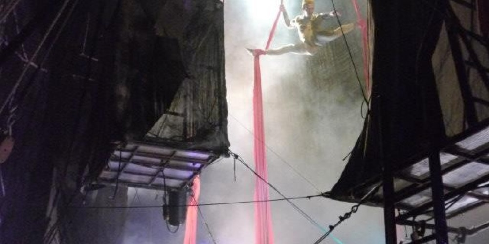
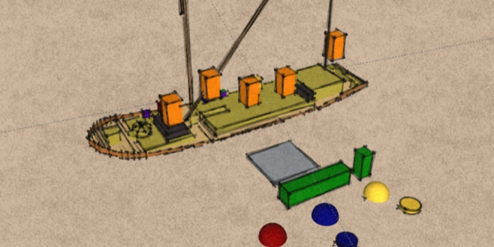
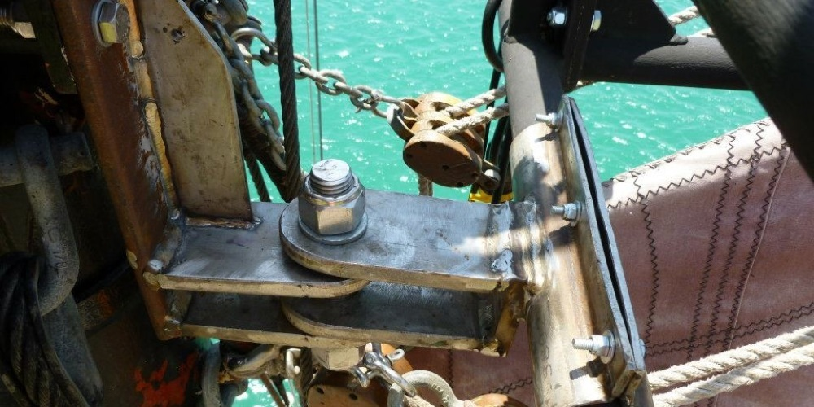
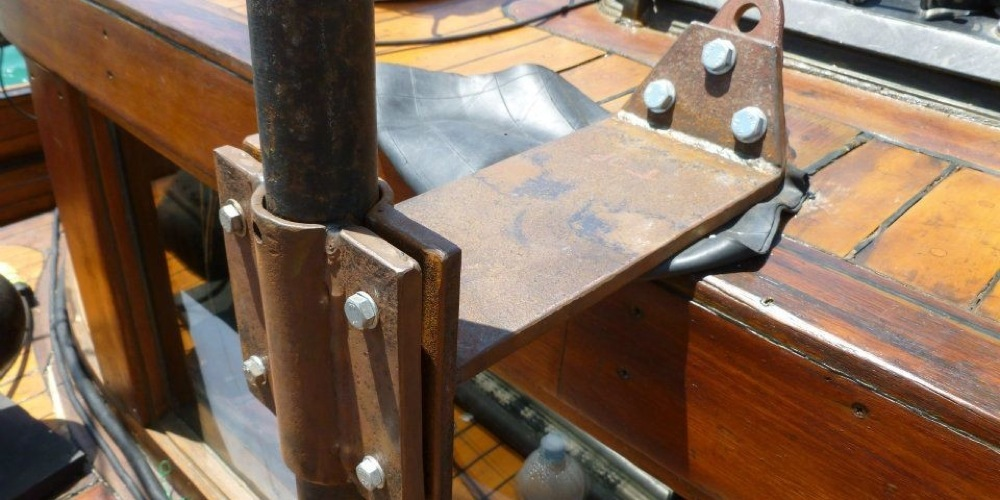
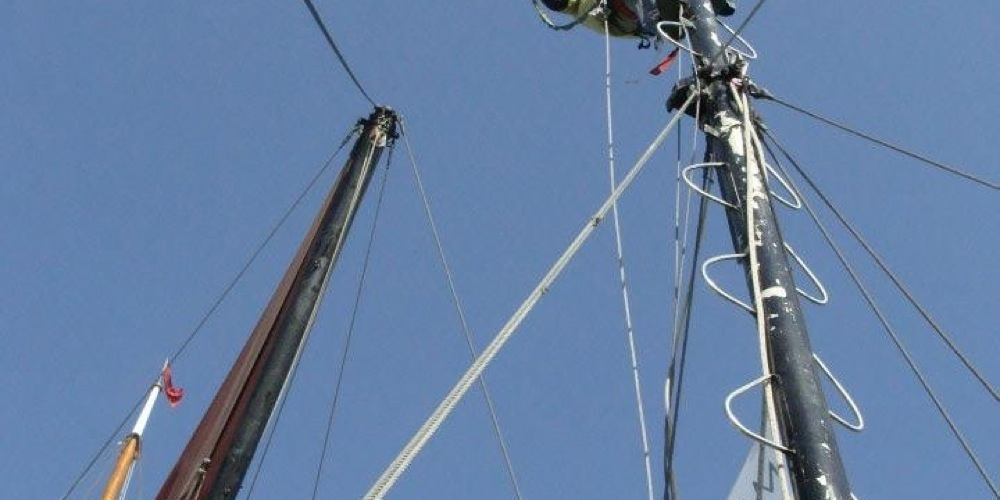
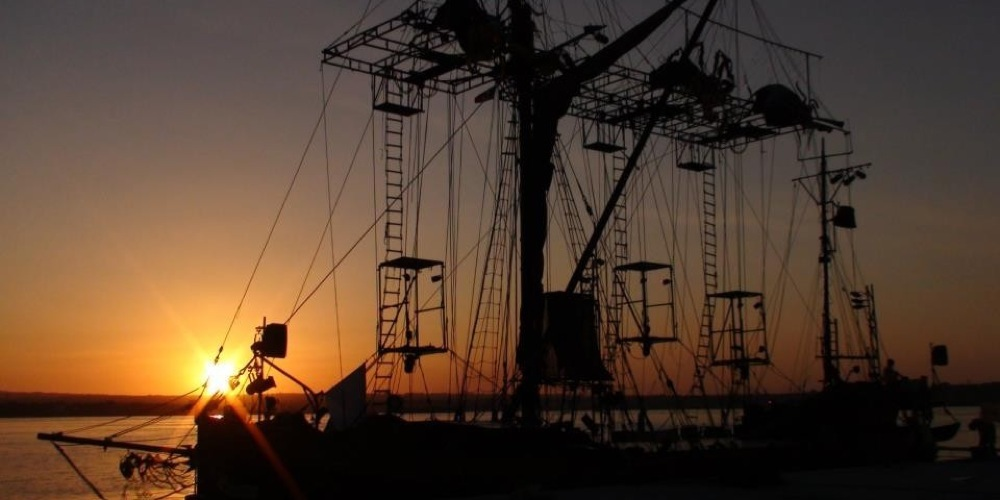

Caravan Stage - Uprising
In early 20012 I was invited to work for a Canadian theater conpany touring around the coast of Sicily in an eighty foot Thames River barge. The show relied on an ambitious set which had all been worked out by the captain the previous winter.
Initially I worked on the design and construction of the aerial pods. Essentially large cuboid built out of steel pipe and kee clamps. They needed to be able to accommodate a standing actor on the top platform and the inside, and also be able to collapse down between shows for easy stowage during sailing.
The backbone of the set was the three-part modular aluminium truss. They ran the length and breadth of the ship and where suspended thirty foot above the deck. Onto the front of the truss where mounted three giant puppet spiders, they where operated by three puppeteers housed in individual puppet booths attached to the back of the truss.
The bodies of the spiders concealed aerial acrobats who took turns to perform on silks and bungee systems suspended below their respective spiders. The truss was accessible by rope ladders to the puppet booths. The actors inhabited a series of collapsible aerial pods clad with tailored theatrical scrim onto which short throw projectors cast a variety of images. The pods where suspended from the truss and stabilised with down halls to the bull works.
The whole set was unified by two massive theatrical scrims stretched from the outer edges of the truss to the bull works. A large projector on the shoe illuminated this whole arrangement.
Initially I worked on the design and construction of the aerial pods. Essentially large cuboid built out of steel pipe and kee clamps. They needed to be able to accommodate a standing actor on the top platform and the inside, and also be able to collapse down between shows for easy stowage during sailing.
My next project was to build three thirty-foot rope ladders. From the start I knew this would involve allot of repetitive tasks, so I spent the time to get myself properly set up before I began. We settled on using two inch steel pipe cut into 500mm lengths with 12mm holes drilled through both sides 30mm in on each end, then deburring the holes and threading black static line through the holes and tying knots to hold the rungs in position.
Where the truss fixed to the mast it was necessary to connect it with a special joint which would allow movement as a static joint could be put under huge force from the leverage acted upon it if the truss where to move a little. I cut the part out of 30mm thick still, drilled the holes, and prepared the edges for welding. But due to my lack of experience and the importance of the joint it was left to a professional welder to finish.
I also did the prep for the joint, which was to support the bottom of the Chinese pole. I was very pleased practice my welding when I was asked to make some deck boxes out of square section steel pipe, I ended up building three in the end.
Over the course of my time on the boat I built up a 3d model of the ship, and as new pieces of set where finished I’d add them to my model, to give an idea of the layout and rigging procedures. When I went on tour with the show, one of my jobs was to string up the spider puppet control lines high up in the truss. It was allot of fun, its exciting working at heights.